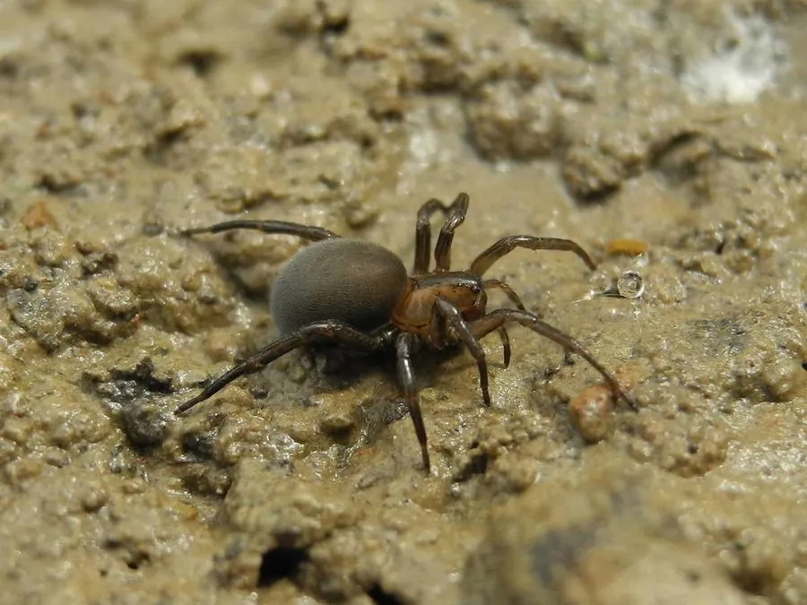

蛛形动物 · 动物界
潜水钟蛛 Argyroneta aquatica

唯一终生生活在水下的蜘蛛，用蛛丝在水底编织钟形气泡作为“潜水钟”，在其中呼吸、进食甚至繁殖。
- 分类
- 门节肢动物门纲蛛形纲目蜘蛛目科水蛛科属水蛛属
- 栖息环境
- 水生植物丰富的池塘、湖泊与缓流溪流的水下
- 地理分布
- 欧洲和亚洲北部的淡水水域
- 保护级别
- IUCN 暂无评估；非中国原产，在中国无保护级别
物种志
潜水钟蛛雌蛛体长 8–15 毫米，雄蛛略大，是少数雄性比雌性大的蜘蛛之一。它体色灰褐，腹部覆盖浓密的疏水绒毛，能锁住一层空气，使身体在水下呈现银色的光泽；八足布满细毛，适合在水中游泳和爬行。
它分布于欧洲和亚洲北部的池塘、湖泊和缓流溪流中，是唯一终生水生的蜘蛛。它用蛛丝在水草间编织钟形网，再从水面带回气泡储存在网中，形成“潜水钟”，在里面呼吸、进食、蜕皮甚至交配；捕食水生昆虫、钩虾、蝌蚪和小鱼。雌蛛在水下产卵并把卵囊放在潜水钟中，幼蛛孵化后先生活在母蛛的潜水钟里。潜水钟蛛对人无害，是研究动物水下呼吸方式的经典物种。
形态与习性
- 食性水生昆虫、钩虾、蝌蚪和小鱼
- 体长雌蛛 8–15 mm，雄蛛略大
- 寿命约 1–1.5 年
- 繁殖卵生，卵囊放在水下潜水钟中
- 活动节律昼夜均活动，终生在水下生活
- 特点用蛛丝编织气泡“潜水钟”，储存空气供呼吸
趣味知识
- 潜水钟蛛是唯一终生生活在水下的蜘蛛，靠腹部绒毛锁住的空气呼吸。
- 它用蛛丝编织钟形网，并潜入水中把气泡带进网内，形成“潜水钟”。
- 雄性潜水钟蛛比雌性略大，这在蜘蛛中比较少见。